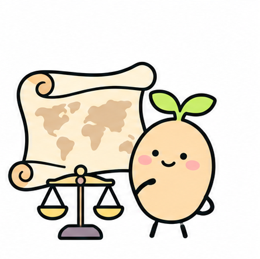
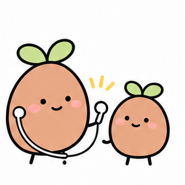
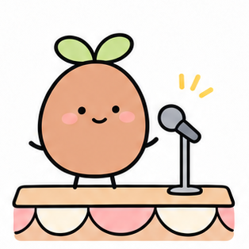
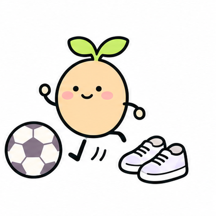

학교에서 자주 듣는 네 가지 고민
좋아하고 잘하는 것이
무엇인지도 모르겠고
어떤 진로를 선택해야 할지
어떤 활동에 참여하는 게
좋은지도 모르겠어요.
무엇인지도 모르겠고
어떤 진로를 선택해야 할지
어떤 활동에 참여하는 게
좋은지도 모르겠어요.
학생
학기 초엔 아이들
성향 파악도 어려운데
진로 지도는 더 어렵네요.
특히 내성적인
아이들을 만나면…
성향 파악도 어려운데
진로 지도는 더 어렵네요.
특히 내성적인
아이들을 만나면…
담임 선생님
프로그램은 많이 개설하는데,
학생들은 맨날
오는 아이들만 오고…
행정 업무는 또
왜 이리 많은지…
학생들은 맨날
오는 아이들만 오고…
행정 업무는 또
왜 이리 많은지…
프로그램 담당
수업 결손이 많은 아이들에게
일일이 수업을
해 줄 수도 없고,
그렇다고
그냥 둘 수도 없고…
일일이 수업을
해 줄 수도 없고,
그렇다고
그냥 둘 수도 없고…
교과 교사
 두근두근 시스템 · 데이터 파이프라인★
두근두근 시스템 · 데이터 파이프라인★
학생과 세 교사가 한 학기 동안 기록을 주고받는 흐름
 ① 나를 알고★
① 나를 알고★
학생은 좋아하고 잘하는 활동을 적고, 프로그램 담당 교사는 학교교육계획서로 한 해 프로그램을 설계
② 꿈을 찾고★
학생은 ①에서 적은 활동으로 꿈의 별자리를 그리고, 담임 교사는 그 별자리를 보며 상담
 ⑤ 기록 · 개선★
⑤ 기록 · 개선★
담임 교사는 ④에서 확정한 생기부를 나이스에 직접 입력하고, 학생 후기는 다음 해 교육계획으로
AI 기반 학습 · 평가 시스템★
교과 교사의 수업 영상 제작과 말하기 평가를 파이프라인 아래층에서 지원
AI를 잘 가르치는 AI 중점학교를 넘어,
나와 꿈을 발견하고 이루는 학교로








두근두근 당곡
감사합니다! :)